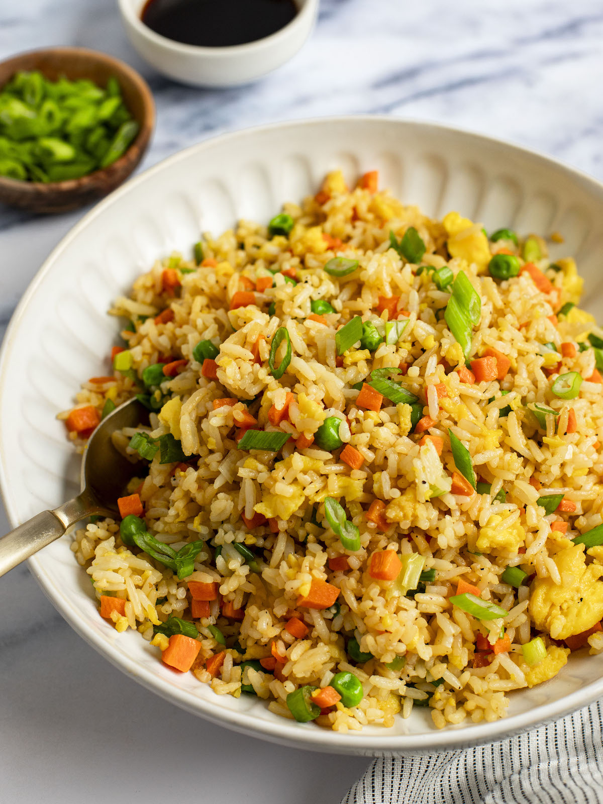

Fried Rice

Description
Get the sauce right and you can make a fried rice that really stacks up to your favourite Chinese restaurant in 10 minutes! This fried rice recipe is super quick, made with egg, veggies and a handful of bacon. But it’s totally customisable – make it your own!
This is a quick, 15 minute fried rice recipe that’s highly versatile. Terrific as it is, but totally adaptable to add what you want.
Ingredients
- 2 tbsp oil
- 1/2 onion, finely chopped
- 2 garlic cloves, minced
- 120g bacon, chopped
- 1 cup diced frozen vegetables
- 2 cups cooked, day old rice
- 3 eggs, whisked
- 3/4 cup green onions
For the Sauce
- 1 tbsp Chinese cooking wine
- 1 tbsp Oyster Sauce
- 1 tbsp light soy sauce
- 1 tsp sesame oil
- 1/4 tsp white pepper
Steps
- Heat oil – Heat about 1 1/2 tbsp oil in a wok or 2 tbsp oil in a skillet over high heat until smoking.
- Add onion, garlic, and bacon. Cook until bacon is light golden – about 1 1/2 minutes.
- Add vegetables (still frozen is fine). Cook for 2 minutes so they defrost and water evaporates.
- Add rice and Sauce ingredients. Cook for 1 1/2 minutes until liquid evaporates.
- Scramble egg – Shove rice to the side of the wok / skillet. Add 1/2 tbsp oil into the cleared space, shift wok so the heat is centred over the cleared space. Pour in egg then scramble – cook it through properly, don't "soft scramble".
- Serve – Add green onion then stir the egg into the rice. Remove from heat and serve immediately!
HOME